Цифровой микротесламетр с
магниторезистивным датчиком
HMC1022 для измерения индукции слабых магнитных полей
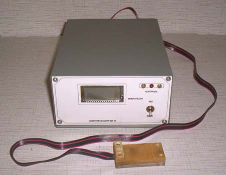
1. Назначение
Цифровой микротесламетр предназначен для оперативного измерения и контроля величины индукции постоянного магнитного поля (сопоставимого с магнитным полем Земли) с помощью магниторезистивного датчика типа HMC1022 [1]. Он может использоваться при измерении и контроле магнитного поля Земли, полей рассеяния постоянных магнитов и магнитных систем, измерении магнитных полей рассеяния транспортируемых грузов, контроле магнитной обстановки, при конструировании и ремонте магнитных систем и устройств с постоянными магнитами, оценки качества размагничивания стальных изделий [8], а также для построения различных измерительных установок и комплексов [6], позволяющих, в частности, измерять переменное низкочастотное магнитное поле при подключении внешнего вольтметра к соответствующему выходу прибора. Прибор имеет автономное питание - аккумуляторную батарею, подзарядка которой может осуществляться сетевым зарядным устройством [9].
2. Технические данные:
3. Устройство микротесламетра
Электрическая принципиальная схема цифрового микротесламетра с магниторезистивным датчиком HMC1022 приведена на рис. 3.1.
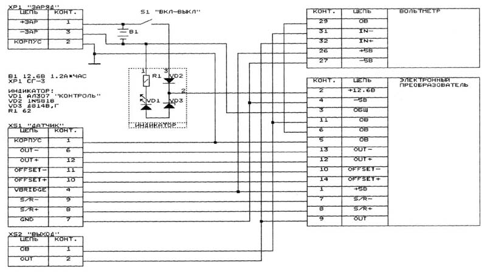
Рис. 3.1. Электрическая принципиальная схема микротесламетра.
В качестве чувствительного элемента прибора использована микросхема HMC1022 [1] (датчик с анизотропным магниторезистивным эффектом, АМР-датчик). В состав микросхемы входят два магниторезистивных датчика, оси максимальной чувствительности которых взаимноортогональны. В зависимости от типа щупа (С- или М-тип) используется один из датчиков. С помощью электронного преобразователя вырабатываются сигналы управления, подаваемые на датчик, и обрабатываются выходные сигналы датчика. Выходное напряжение преобразователя измеряется с помощью встроенного цифрового вольтметра [2], состоящего из аналого-цифрового преобразователя с жидко-кристаллическим семисегментным индикатором. Для питания схем прибора используется аккумуляторная батарея со стабилизаторами напряжения (источник питания).
Корпус прибора состоит из основания, передней и задней панелей, соединенных между собой. Электронные узлы прибора, устройства подключения и управления, а также аккумуляторная батарея крепятся на основании и панелях. Сверху корпус закрывается П-образным кожухом. На рис. 3.2 и 3.3 показан вид микротесламетра спереди и сзади.
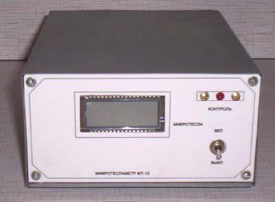
Рис. 3.2. Цифровой микротесламетр - вид спереди.
На передней панели прибора расположены: выключатель питания ("ВКЛ - ВЫКЛ"), индикатор степени разряженности аккумуляторной батареи ("КОНТРОЛЬ"), цифровой индикатор прибора ("МИКРОТЕСЛА").
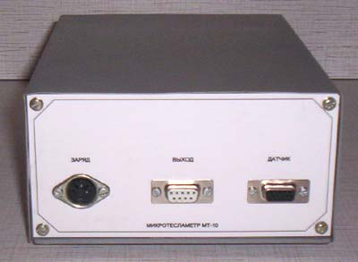
Рис. 3.3. Цифровой микротесламетр - вид сзади.
На задней панели прибора расположены: разъем для подключения зарядного устройства ("ЗАРЯД"), разъем для подключения щупа ("ДАТЧИК"), разъем для подключения внешнего оборудования ("ВЫХОД").
Внешний вид зарядного устройства для аккумуляторной батареи микротесламетра [9] показан на рис. 3.4.
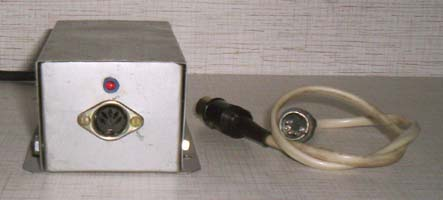
Рис. 3.4. Зарядное устройство для микротесламетра.
Зарядное устройство представляет собой понижающий трансформатор сетевого напряжения 220 В частотой 50 Гц с низковольтным выпрямителем и ограничителем тока. Для контроля процесса зарядки аккумуляторной батареи используется индикатор заряда.
4. Конструкция щупа
В зависимости от предназначения прибора могут использоваться разные конструкции щупа. Некоторые из них представлены ниже.
Вариант 1:
Щуп микротесламетра состоит из печатной платы с микросхемой HMC1022, основания и верхней крышки, скрепленных между собой немагнитными винтами (рис. 4.1, 4.2). В зависимости от того, какой из датчиков микросхемы подключен к кабелю, получаем щуп С- или М- типа. На верхней крышке щупа при необходимости может быть расположена обойма с дисковым постоянным магнитом (направление намагниченности диаметральное). Поворотом этого магнита устанавливаются нулевые показания прибора при ненулевом внешнем поле в зоне датчика.
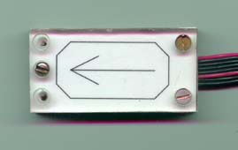
Рис. 4.1. Щуп С-типа с микросхемой HMC1022. Габариты щупа 60 х 30 х 12 мм3.
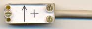
Рис. 4.2. Щуп М-типа с микросхемой HMC1022. Габариты щупа 25 х 10 х 9 мм3.
Вариант 2:
Щуп микротесламетра состоит из печатной платы с микросхемой HMC1022, которая сверху закрывается цилиндрическим наконечником, вставляемым в рукоятку (рис. 4.3). В зависимости от того, какой из датчиков микросхемы подключен к кабелю, получаем щуп С- или М- типа. Диаметр наконечника щупа может быть доведен до 9 мм и менее.
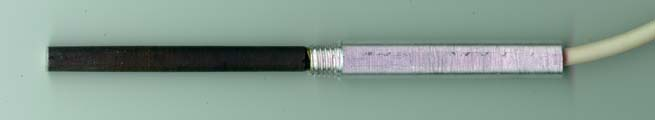
Рис. 4.3. Щуп С- или М- типа с микросхемой HMC1022. Длина щупа 175 мм, диаметр наконечника 9 мм.
5. Испытания микротесламетра
5.1. Поверка и калибровка прибора в постоянном и переменном магнитном поле
Калибровка и поверка цифрового микротесламетра с магниторезистивным датчиком HMC1022 в постоянном магнитном поле произведена с помощью калибровочного соленоида [4] с расчетным коэффициентом преобразования по току 490.3 мкТл/А в диапазоне токов +0.4 А с с помощью установки, схема которой приведена на рис. 5.1.1. Обмотка калибровочного соленоида запитывается от регулируемого источника питания [5] через добавочный резистор R1, облегчающий регулировку тока посредством изменения выходного напряжения источника питания. Контроль величины тока осуществляется с помощью амперметра PA1 (мультиметр MY-65, диапазон измерения постоянного тока 20 А). Смена полярности тока производится посредством перестановки штеккеров в гнездах источника питания. Щуп с датчиком HMC1022 микротесламетра крепится на немагнитной вставке таким образом, чтобы он оказался близко к центру соленоида, а его измерительная ось была параллельна оси соленоида. Ось соленоида ориентируется в примерном направлении восток-запад, чтобы при отсутствии тока в его обмотке показания микротесламетра в этом направлении были близки к нулю.
Рис. 5.1.1. Схема установки для поверки или калибровки микротесламетра по собственным показаниям в постоянном магнитном поле с помощью калибровочного соленоида. Изменение полярности магнитного поля производится посредством изменения полярности подключения к источнику питания.
Внешний вид установки показан на рис. 5.1.2.

Рис. 5.1.2. Внешний вид установки для поверки или калибровки микротесламетра по собственным показаниям в постоянном магнитном поле с помощью калибровочного соленоида.
График зависимости показаний прибора от индукции магнитного поля калибровочного соленоида представлен на рис. 5.1.3.
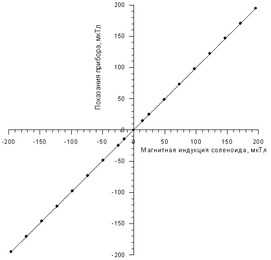
Рис. 5.1.3. Зависимость показаний микротесламетра от величины индукции постоянного магнитного поля калибровочного соленоида.
В соответствии с графиком на рис. 5.3 показания микротесламетра с датчиком HMC1022 могут быть аппроксимированы выражением: B = 0.994003 ∙ B0 + 0.0368419, где B - магнитная индукция по показаниям микротесламетра, мкТл, B0 - расчетная величина магнитной индукции поля калибровочного соленоида по току обмотки. Среднеквадратичное отклонение составляет 0.0694293. Точность и линейность показаний вполне соответствуют заявленным характеристикам прибора.
Если к внешнему выходу микротесламетра с коэффициентом преобразования 1 мВ/мкТл подключить вольтметр, то можно произвести поверку или калибровку прибора в более широком диапазоне магнитной индукции. Схема соответствующей установки показана на рис. 5.1.4, а ее внешний вид - на рис. 5.1.5. Обмотка калибровочного соленоида с коэффициентом преобразования по току 490.3 мкТл/А подсоединена к регулируемому источнику питания [5] через добавочный резистор R1, облегчающий регулировку тока посредством изменения выходного напряжения источника питания. Контроль величины тока осуществляется с помощью амперметра PA1 (мультиметр MY-65, диапазон измерения постоянного тока 20 А). К внешнему выходу микротесламетра с коэффициентом преобразования 1 мВ/мкТл подключается мультиметр APPA-107N в режиме измерения постоянного напряжения (диапазоны 200 мВ и 2 В). Смена полярности тока производится посредством перестановки штеккеров в гнездах источника питания. Щуп микротесламетра крепится на вставке таким образом, чтобы он оказался близко к центру соленоида, а его измерительная ось была параллельна оси соленоида. Ось соленоида ориентируется в примерном направлении восток-запад таким образом, чтобы при отсутствии тока в обмотке показания микротесламетра и внешнего вольтметра в этом направлении были близки к нулю.
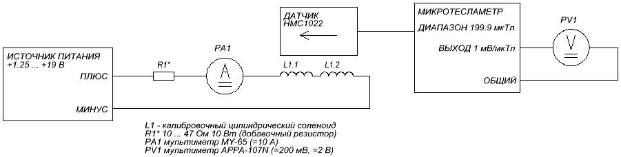
Рис. 5.1.4. Схема установки для поверки или калибровки микротесламетра по показаниям внешнего прибора в постоянном магнитном поле с помощью калибровочного соленоида. Изменение полярности магнитного поля производится посредством изменения полярности подключения к источнику питания.
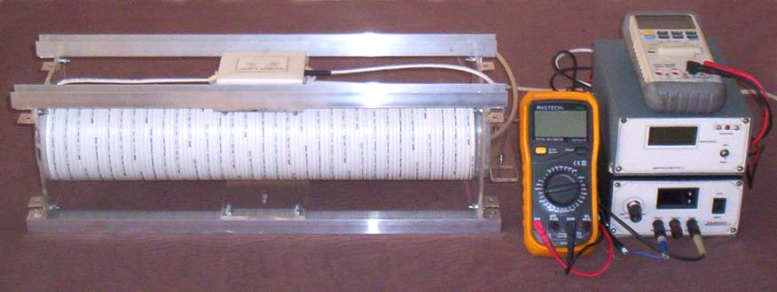
Рис. 5.1.5. Внешний вид установки для поверки или калибровки микротесламетра по показаниям внешнего прибора в постоянном магнитном поле с помощью калибровочного соленоида.
График зависимости показаний внешнего прибора (в пересчете на единицы магнитной индукции) от индукции магнитного поля калибровочного соленоида представлен на рис. 5.1.6.
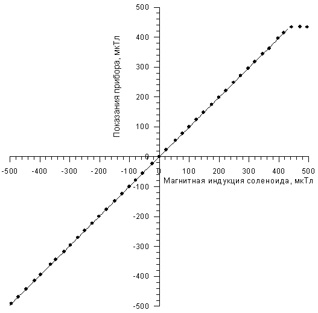
Рис. 5.1.6. Зависимость величины выходного сигнала микротесламетра от величины индукции постоянного магнитного поля калибровочного соленоида.
По полученным данным (рис. 5.1.6) сигнал на выходе микротесламетра с датчиком HMC1022 в диапазоне -500 ... +430 мкТл может быть аппроксимирован выражением: B = 0.992289 ∙ B0 - 0.139466, где B - магнитная индукция по показаниям внешнего прибора, мкТл, B0 - расчетная величина магнитной индукции поля калибровочного соленоида по току обмотки. Среднеквадратичное отклонение составляет 0.572433. Точность и линейность показаний вполне соответствуют заявленным характеристикам прибора.
Поверка цифрового микротесламетра с магниторезистивным датчиком HMC1022 в переменном магнитном поле произведена с помощью того же калибровочного соленоида [4] с расчетным коэффициентом преобразования по току 490.3 мкТл/А в диапазоне токов 0 ... ~1 А на двух частотах 60 и 180 Гц с с помощью установки, схема которой показана на рис. 5.1.7. Обмотка калибровочного соленоида подключена через добавочный резистор R1 к усилителю мощности низкой частоты [7], на вход которого подается синусоидальный сигнал от задающего генератора, в качестве которого служит генератор осциллографа INSTRUSTAR ISDS2062B, подключенный к USB-порту компьютера. Контроль действующего значения тока осуществляется с помощью амперметра PA1 (мультиметр MY-65, диапазон измерения переменного тока 20 А). Резистор R1 облегчает регулировку тока посредством регулировки усиления усилителя мощности. К выходу микротесламетра с коэффициентом преобразования 1 мВ/мкТл подключен вольтметр PV1, измеряющий действующее значение переменного напряжения (мультиметр APPA-107N, диапазоны измерения переменного напряжения 200 мВ или 2 В). Щуп микротесламетра крепится на вставке таким образом, чтобы он оказался близко к центру калибровочного соленоида, а его измерительная ось была параллельна оси соленоида, сориентированной в примерном направлении восток-запад, чтобы при отсутствии тока в обмотке показания микротесламетра по постоянному магнитному полю были близки к нулю. Внешний вид установки показан на рис. 5.1.8.
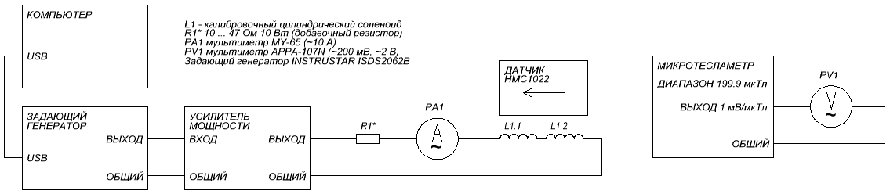
Рис. 5.1.7. Схема установки для поверки или калибровки микротесламетра по показаниям внешнего прибора в переменном магнитном поле с помощью калибровочного соленоида.

Рис. 5.1.8. Внешний вид установки для поверки или калибровки микротесламетра по показаниям внешнего прибора в постоянном магнитном поле с помощью калибровочного соленоида.
Графики зависимости сигнала на выходе прибора от индукции переменного магнитного поля калибровочного соленоида представлены на рис. 5.1.9 (значения сигналов действующие).
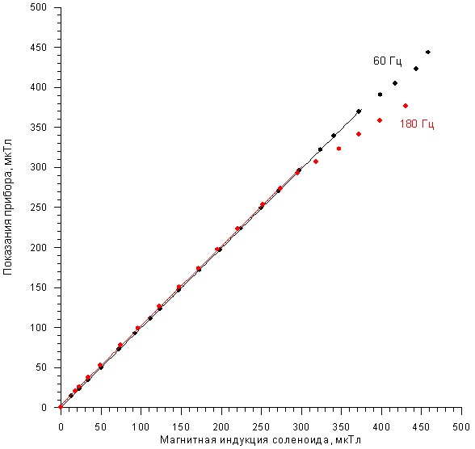
Рис. 5.1.9. Зависимость величины выходного сигнала микротесламетра от величины индукции переменного магнитного поля калибровочного соленоида (значения сигналов действующие).
На частоте 60 Гц вплоть до величины магнитной индукции 375 мкТл показания прибора могут быть аппроксимированы выражением B = 0.991836 ∙ B0 + 0.713717, где B - действующее значение магнитной индукции по выходным показаниям прибора, B0 - действующее значение магнитной индукции в калибровочном соленоиде, рассчитанное по току обмотки. Среднеквадратичное отклонение составляет 0.116707. Соответственно, на частоте 180 Гц до величины магнитной индукции 300 мкТл B = 0.990173 ∙ B0 + 3.45303 (среднеквадратичное отклонение 1.79823).
Точность и линейность показаний на выходе прибора с коэффициентом преобразования 1 мВ/мкТл вполне соответствуют заявленным характеристикам. Отклонения показаний прибора от прямой в сторону более низких значений при повышении магнитной индукции, а также при повышении частоты, обусловлены ограниченностью его рабочего диапазона по магнитной индукции и довольно узкой полосой пропускания.
5.2. Оценка разрешающей способности (порога чувствительности) прибора
Для оценки разрешающей способности (порога чувствительности) микротесламетра к его выходу с коэффициентом преобразования 1 мВ/мкТл подключался мультиметр APPA-107N (диапазон измерений 20 мВ, разрешение 1 мкВ), щуп прибора помещался в электрически соединенный с его корпусом заземленный электромагнитный экран и ориентировался в горизонтальной плоскости либо в направлении восток-запад (почти нулевая компонента индукции магнитного поля Земли), либо в направлении север-юг (компонента магнитной индукции около 20 мкТл) [3]. Последовательные отсчеты мультиметра записывались в файл, обрабатывались программно для получения усредненных значений и среднеквадратичного отклонения в зависимости от количества отсчетов, начиная с первого. Внешний вид установки показан на рис. 5.2.1, а результаты измерений - на рис. 5.2.2.
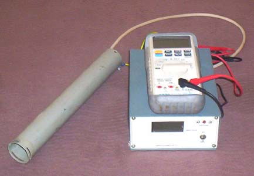
Рис. 5.2.1. Внешний вид установки для оценки разрешающей способности (порога чувствительности) и уровня шума микротесламетра.

Рис. 5.2.2. Зависимость среднеквадратичного отклонения отсчетов микротесламетра от числа проведенных измерений при разной ориентации щупа.
В соответствии с проведенными измерениями может быть сделан вывод о вполне достижимой разрешающей способности микротесламетра 5 ... 10 нТл и даже лучше.
5.3. Оценка уровня шума прибора
Оценка уровня шума на выходе микротесламетра (коэффициент преобразования 1 мВ/мкТл) была проведена с помощью представленной выше установки (рис. 5.2.1). Графики последовательных отсчетов сигнала на выходе прибора показаны на рис. 5.3.1 и 5.3.2.

Рис. 5.3.1. Серия измерений магнитной индукции микротесламетром с внешним прибором при ориентации магниточувствительной оси щупа в направлении примерно восток-запад. Величина шума от пика до пика примерно 15 нТл. Девиация среднего значения с увеличением числа проведенных отсчетов составляет примерно 4 нТл.
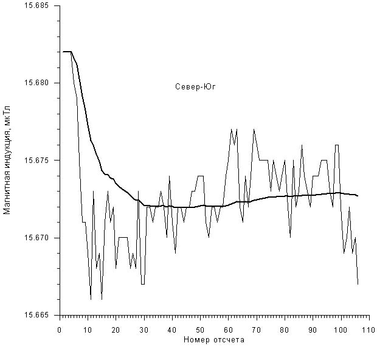
Рис. 5.3.2. Серия измерений магнитной индукции микротесламетром с внешним прибором при ориентации магниточувствительной оси щупа в направлении примерно север-юг. Величина шума от пика до пика примерно 15 нТл. Девиация среднего значения с увеличением числа проведенных отсчетов составляет примерно 10 нТл.
Таким образом, уровень шума на выходе микротесламетра находится на уровне 10 ... 15 нТл от пика до пика при длительности измерений порядка одной минуты.
Спектр сигнала на внешнем выходе микротесламетра (коэффициент преобразования 1 мВ/мкТл) измерен с помощью осциллографа INSTRUSTAR ISDS2062B, подключенного к USB-порту компьютера. Режим измерений - закрытый вход (только переменная составляющая). Щуп прибора помещен в заземленный электромагнитный экран и сориентирован в направлении восток-запад (близкая к нулю компонента магнитной индукции). Спектрограмма выходного сигнала представлена на рис. 5.3.3.
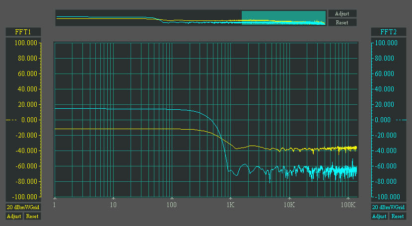
Рис. 5.3.3. Спектр сигнала на выходе микротесламетра (желтый). Для сравнения показан спектр сигнала второго канала с короткозамкнутым закрытым входом (синий). Фильтр Blackman_Harris.
6. Выводы
По итогам проведенных испытаний можно сделать вывод о том, что точность, линейность, частотный диапазон и разрешающая способность микротесламетра с магниторезистивным датчиком HMC1022 соответствует заявленным значениям (п. 2). Рабочий диапазон по магнитной индукции при использовании внешнего вольтметра, подключаемого к выходу прибора с коэффициентом преобразования 1 мВ/мкТл, составляет порядка 400 мкТл для постоянного магнитного поля и 300 ... 400 мкТл (в зависимости от частоты) для переменного (действующее значение). Прибор может работать в переменных магнитных полях в достаточно широком диапазоне частот, по крайней мере, не менее 180 Гц в полях до 300 мкТл. Разрешающая способность прибора может достигать 10 нТл при подключении внешнего вольтметра. Двойное пиковое значение уровня шума примерно 15 нТл.
Желающие приобрести или самостоятельно изготовить цифровой микротесламетр с магниторезистивным датчиком HMC1022 могут обратиться за дополнительной информацией к автору (см. раздел Контактная информация).
7. Соотношения между единицами измерения магнитной индукции (Тл - Тесла, Гс - Гаусс):
Ссылки:
04.09.2006
09.09.2007
26.03.2008
29.01.2012
29.01.2014
22.03.2021
Альтернативные источники
энергии
Компьютеры и
Интернет
Магнитные поля
Механотронные системы
Перспективные
разработки
Электроника и
технология